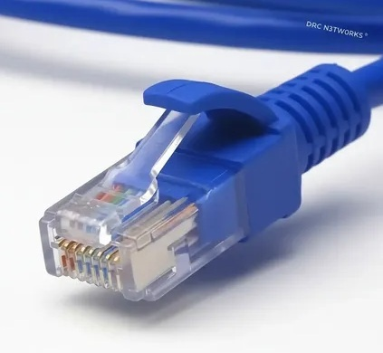
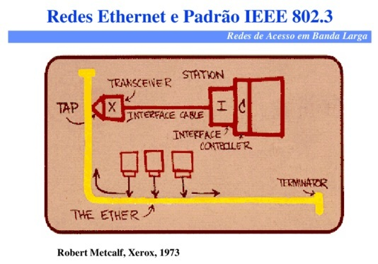

ETHERNET (PADRÃO IEEE 802.3)
ESTRUTURA FÍSICA E CABEAMENTO
ETHERNET EM REDES CORPORATIVAS E LOCAIS (LAN)
A Ethernet (IEEE 802.3) em redes corporativas é a espinha dorsal que conecta computadores, servidores, telefones VoIP, pontos de acesso Wi-Fi e sistemas de segurança à rede da empresa. É uma arquitetura focada em alta disponibilidade, gerenciamento de tráfego e escalabilidade.
MEIOS FÍSICOS E CABOS ADOTADOS
A infraestrutura é dividida normativamente entre o Cabeamento Horizontal (do rack do andar até as mesas dos usuários) e o Backbone (interligação vertical entre racks de andares diferentes ou salas centrais de servidores).
CONCEITO GERAL DA REDE LOCAL CORPORATIVA
- Comutação por Switches de Alta Performance: Diferente de redes domésticas simples, o conceito corporativo gira em torno de switches gerenciáveis de Camada 2 (L2) e Camada 3 (L3). Eles analisam os Quadros Ethernet (FRAMES) em tempo real e entregam o pacote diretamente ao endereço MAC de destino, garantindo que o tráfego de um setor não congestione o outro.
- Segurança e Segmentação (VLANs): Embora todos usem a mesma infraestrutura física Ethernet, logicamente a rede é dividida em redes virtuais (VLANs). O conceito de quadro Ethernet permite que switches corporativos adicionem uma "etiqueta" (Tag 802.1Q) para isolar o tráfego da Diretoria, do Financeiro ou da rede de Visitantes.
- Transmissão Full-Duplex Dedicada: Não existem colisões de dados em redes locais corporativas. Cada cabo conectado a uma mesa ou servidor funciona como uma "estrada exclusiva" bidirecional para o switch, permitindo o envio e recebimento simultâneo de dados.
- PoE (Power over Ethernet - IEEE 802.3af/at/bt): Um conceito vital no ambiente corporativo. A Ethernet reaproveita os fios de cobre dos cabos de par trançado para transmitir energia elétrica junto com os dados. Isso permite alimentar telefones IP, câmeras de segurança e Access Points de teto sem a necessidade de uma tomada elétrica perto deles.
MEIOS FÍSICOS E CABOS ADOTADOS EM EMPRESAS
O cabeamento de uma empresa é dividido estritamente em duas frentes estruturadas: o Cabeamento Horizontal (do rack até as mesas) e o Backbone (interligação entre racks e salas de servidores).

CABEAMENTO HORIZONTAL (COBRE PAR TRANÇADO UTP/STP)
Utilizado para cobrir a distância final até as estações de trabalho. O limite físico normativo é de 100 metros (sendo recomendado 90 metros de cabo rígido na parede e 10 metros de cabos flexíveis/patch cords nas pontas).
- UTP (Sem blindagem): É o padrão absoluto para escritórios comerciais comuns, pois as calhas e canaletas não sofrem com ruídos eletromagnéticos pesados.
- STP / F-UTP (Com blindagem): Utilizado em escritórios corporativos que ficam muito próximos a salas de geradores, poços de elevador ou que passam junto à fiação elétrica de alta potência.
- Categorias Corporativas Atuais:
- Cat6 (1 Gbps): O padrão mínimo aceito hoje para novas instalações corporativas em desktops de escritórios.
- Cat6A (10 Gbps): Utilizado em empresas de tecnologia, agências de mídia (edição de vídeo/imagem) ou para conectar os novos Access Points Wi-Fi 6/7 que exigem mais de 1 Gbps de banda no cabo.
CABEAMENTO DE BACKBONE E SALA DE SERVIDORES (FIBRA ÓPTICA)
Utilizado para conexões que exigem imunidade a ruídos (entre andares ou prédios diferentes) e taxas de transferência massivas de dados.
- Fibra Multimodo (MMF - OM3 / OM4 / OM5): O tipo de fibra mais comum dentro de prédios corporativos. Utiliza lasers de baixo custo para interligar os switches das alas/andares até o switch central da empresa (Core) a velocidades de 10 Gbps, 40 Gbps ou 100 Gbps, cobrindo distâncias de até 400–550 metros.
- Fibra Monomodo (SMF - OS2): Utilizada no contexto corporativo para interligar plantas industriais distantes, galpões separados por rodovias ou para conectar a empresa diretamente ao link de fibra dedicada da operadora de internet (distâncias acima de 1 km até 40 km).
CONEXÕES DE ALTÍSSIMA VELOCIDADE (TWINAX / DAC)
Direct Attach Copper (DAC): Cabos blindados de cobre de curtíssimo alcance (1 a 7 metros). No ambiente corporativo, eles são restritos ao interior da sala de servidores (CPD) para interligar os servidores de armazenamento (Storages) diretamente ao switch central, oferecendo o desempenho do link de 10G/40G a uma fração do preço da fibra óptica.
CONECTORES PADRONIZADOS E IDENTIFICAÇÃO
CONECTORES PARA CABEAMENTO HORIZONTAL (COBRE)
Responsáveis por conectar as estações de trabalho (computadores, telefones VoIP, impressoras) aos switches localizados no rack do andar.
- RJ45 (8P8C): O conector soberano das redes locais corporativas. É utilizado tanto na tomada de parede onde o usuário se conecta quanto nos patch panels e switches dentro do rack. Para garantir velocidades de 1 Gbps a 10 Gbps em redes corporativas modernas, utiliza-se o conector RJ45 blindado (FTP/STP) ou comum (UTP) compatível com cabos Cat6 ou Cat6A.
- GG45 / ARJ45: Embora façam parte do padrão para categorias mais altas (como Cat7), sua adoção corporativa em desktops é quase inexistente, pois o mercado saltou diretamente do cabo de cobre Cat6A (com RJ45) para a fibra óptica quando necessita de desempenho superior.
CONECTORES PARA O BACKBONE E SALAS DE SERVIDORES (FIBRA ÓPTICA)
Responsáveis por interligar os switches de diferentes andares da empresa (Backbone) ou conectar servidores de alta performance aos switches principais (Core).
- LC (Lucent Connector): O conector óptico mais importante da rede corporativa atual. Por ser compacto (Small Form Factor), ele permite agrupar o dobro de conexões no mesmo espaço que conectores antigos. É o padrão nativo dos módulos transceptores SFP e SFP+ inseridos nos switches corporativos.
- SC (Subscriber Connector): Ainda muito presente em redes locais, mas normalmente limitado a instalações de transição. É muito encontrado nos Distribuidores Internos Ópticos (DIO) instalados na base dos racks, onde o cabo de fibra externo que vem de outro andar é fixado.
- MPO / MTP (Multi-fiber Push On): Utilizado no ecossistema corporativo especificamente para backbones de altíssima velocidade em salas de servidores ou salas de switches centrais. Um único conector MPO injeta até 12 ou 24 fibras simultaneamente no switch para fechar links agregados de 40 Gbps ou 100 Gbps.
- ST (Straight Tip): Considerado obsoleto para o ambiente corporativo moderno. Só é visto em empresas que possuem infraestrutura de fibra multimodo muito antiga (décadas de 1990/2000) e que ainda não passaram por modernização.
TOPOLOGIAS SUPORTADAS NA ETHERNET CORPORATIVA

TOPOLOGIA EM ESTRELA (STAR) — O PADRÃO ABSOLUTO DA LAN
É a topologia obrigatória e soberana em qualquer rede local corporativa moderna. Cada dispositivo final (computador, telefone IP, impressora) possui uma conexão física exclusiva e dedicada por meio de um cabo de par trançado (com conector RJ45) ou fibra óptica (com conector LC) conectado a um ponto central: o Switch.
Vantagem Corporativa: Isolamento de falhas. Se o cabo de uma estação quebrar ou o conector RJ45 queimar, apenas aquele dispositivo perde o acesso à rede. O restante da empresa continua operando normalmente.
TOPOLOGIA EM ÁRVORE OU ESTRELA ESTENDIDA (TREE / HIERARCHICAL) — O PADRÃO DO BACKBONE
Nas empresas, uma única "estrela" não é suficiente para conectar centenas de usuários espalhados por vários andares. Por isso, a Ethernet corporativa adota o conceito de Topologia em Árvore, que nada mais é do que conectar várias estrelas entre si de forma hierárquica.
Como funciona na prática: Os switches de acesso (que ficam nos racks dos andares atendendo os usuários) são conectados por cabos de fibra óptica (Backbone) a um switch central de alta performance chamado Switch Core (geralmente localizado no CPD/sala de servidores principal).
TOPOLOGIA EM MALHA (MESH) — APLICADA PARA ALTA DISPONIBILIDADE (REDUNDÂNCIA)
No ambiente corporativo, se o cabo que interliga o switch de um andar ao switch central quebrar, o andar inteiro fica sem sistema. Para evitar isso, a Ethernet suporta a Topologia em Malha (parcial ou total) na interconexão dos switches principais e servidores de missão crítica.
O Desafio Lógico (Loops de Rede): Se você conectar três switches em triângulo (malha) para ter caminhos redundantes, os quadros Ethernet vão circular infinitamente entre eles, gerando uma "tempestade de broadcast" que derruba a rede inteira.
A Solução Corporativa: A Ethernet resolve isso de forma lógica através de protocolos como o STP (Spanning Tree Protocol - IEEE 802.1D/w/s) ou LACP (Link Aggregation - IEEE 802.3ad). O STP identifica as conexões em malha e bloqueia eletronicamente os caminhos redundantes. Se o link principal cair, o STP reativa o link de reserva em milissegundos de forma automática.
INTERFACE ELÉTRICA E TRANSMISSÃO DE SINAIS
SINALIZAÇÃO E NÍVEIS NA ETHERNET CORPORATIVA
REDES DE COBRE (PAR TRANÇADO - CAT6 / CAT6A)
Nos cabos de cobre, a Ethernet utiliza o conceito de Sinalização Diferencial (MLT-3 e PAM). O sinal não é medido em relação ao "aterramento", mas sim pela diferença de tensão entre os dois fios que formam o par trançado (reduzindo drasticamente a vulnerabilidade a ruídos externos).
- Fast Ethernet (100 Mbps - 100BASE-TX): Utiliza a codificação MLT-3 (Multi-Level Transmit 3). Ela cicla entre três níveis de tensão (+1V, 0V, -1V). Isso reduz a frequência máxima do sinal elétrico, permitindo que a taxa de dados atinja 100 Mbps sem violar limites de interferência eletromagnética.
- Gigabit Ethernet (1 Gbps - 1000BASE-T): Utiliza a modulação PAM-5 (Pulse Amplitude Modulation 5). Em vez de enviar apenas 1 bit por vez (0 ou 1), a Ethernet Gigabit altera a tensão do cabo em 5 níveis diferentes (-2V, -1V, 0V, +1V, +2V). Isso permite transmitir 2 bits por pulso elétrico simultaneamente em cada um dos 4 pares do cabo.
- 10 Gigabit Ethernet (10 Gbps - 10GBASE-T): Utiliza modulações ainda mais complexas, como PAM-16 combinada com correções de erro digitais em tempo real (DSQ128), dividindo frequências altíssimas para aproveitar os 500 MHz do cabo Cat6A.
REDES DE FIBRA ÓPTICA (MULTIMODO E MONOMODO)
Nas conexões ópticas (transceptores SFP+ com conectores LC), os dados são transmitidos por Pulsos de Luz gerados por emissores de estado sólido.
- Fibra Multimodo (OM3/OM4): Utiliza Lasers VCSEL (Vertical-Cavity Surface-Emitting Laser) que emitem pulsos de luz invisível no comprimento de onda de 850 nm. É um laser de altíssima velocidade e baixo custo, ideal para o ambiente de Data Centers internos corporativos.
- Fibra Monomodo (OS2): Utiliza Lasers Fabry-Perot (FP) ou DFB que operam em comprimentos de onda maiores (geralmente 1310 nm ou 1550 nm). Esses lasers geram um feixe extremamente focado de luz capaz de percorrer quilômetros sem perder a intensidade.
- Codificação Óptica (NRZ e PAM-4): Em redes corporativas ópticas tradicionais (1 Gbps e 10 Gbps), o padrão de sinalização utilizado é o NRZ (Non-Return-to-Zero), onde o laser apenas alterna entre "aceso" (1) e "apagado" (0). Em backbones de altíssima velocidade (40G/100G corporativos com conectores MPO), migra-se para o PAM-4, que utiliza 4 níveis de intensidade de luz para transmitir o dobro de dados no mesmo feixe.
ALIMENTAÇÃO PELO BARRAMENTO (POWER OVER ETHERNET - POE)
Diferente de sistemas que exigem uma infraestrutura de energia elétrica separada (com tomadas convencionais e fontes locais), a Ethernet corporativa moderna aproveita o próprio cabeamento estruturado de par trançado de cobre (Cat6 / Cat6A) para transmitir energia e dados pelo mesmo cabo.
O MECANISMO DE FUNCIONAMENTO
- Dados e Energia Juntos: Em redes Gigabit Ethernet (1000BASE-T) e superiores, todos os 4 pares do cabo de cobre transportam dados simultaneamente. O PoE injeta energia elétrica contínua (CC) como um sinal de modo comum através dos pares de fios, sem causar interferência nas frequências dos dados digitais de alta velocidade.
- Segurança e Negociação Ativa: O processo é inteligente. O switch PoE (conhecido como Power Sourcing Equipment - PSE) não envia energia de forma cega. Quando um dispositivo (como um telefone IP ou câmera) é conectado via conector RJ45, o switch realiza uma assinatura e classificação de baixa tensão para verificar se o aparelho suporta PoE. Se o dispositivo não for compatível, o switch envia apenas dados, evitando a queima de equipamentos tradicionais (como computadores comuns).
CLASSES E PADRÕES OFICIAIS IEEE 802.3
A alimentação por barramento na Ethernet evoluiu para suportar potências cada vez maiores, dividindo-se em três padrões corporativos principais:
- PoE Clássico (IEEE 802.3af): Fornece até 15,4W na porta do switch. Ideal para telefones VoIP básicos, câmeras de segurança fixas e sensores de presença.
- PoE+ (IEEE 802.3at): Fornece até 30W na porta do switch. Utilizado para alimentar pontos de acesso Wi-Fi de alta performance corporativos e câmeras de monitoramento do tipo PTZ (com motores de movimentação e zoom).
- PoE++ / Ultra PoE (IEEE 802.3bt): A versão mais recente e robusta. Utiliza todos os 4 pares do cabo para entregar de 60W a 90W de potência. É capaz de alimentar telas de sinalização digital, quiosques eletrônicos, iluminação LED inteligente de escritórios e computadores do tipo Thin Client.
ISOLAÇÃO E PROTEÇÃO CONTRA RUÍDOS NA ETHERNET CORPORATIVA
O ambiente corporativo exige alta resiliência contra Interferências Eletromagnéticas (EMI) e de Radiofrequência (RFI), geradas por sistemas de ar-condicionado, reatores de iluminação fluorescente e cabos de potência elétrica que compartilham as calhas de cabeamento.
ISOLAÇÃO MAGNÉTICA NATIVA (CAMADA FÍSICA)
Antes mesmo de avaliar blindagens externas, a Ethernet possui uma proteção nativa por hardware:
Isolação por Transformador (Acoplamento Magnético): Toda placa de rede Ethernet (computador, switch ou roteador) possui pequenos transformadores de isolação na interface física (PHY) logo atrás do conector RJ45.
Função: Eles garantem uma isolação galvânica de até 1.500 V (conforme a norma IEEE 802.3). Isso protege os circuitos integrados internos contra picos de tensão transientes e diferenças de potencial de terra entre equipamentos distantes.
ESPECIFICAÇÕES DE BLINDAGEM (SHIELD) E CANCELAMENTO
Para mitigar a EMI (do inglês Electromagnetic Interference - Interferência Eletromagnética) em lances de cabos paralelos à rede elétrica, utilizam-se técnicas de trançamento e blindagem metálica:
Casamento de Impedância e Trançamento: O próprio entrelaçamento dos pares de cobre força com que o ruído captado por um fio seja cancelado pelo outro no receptor (sinalização diferencial).
Blindagem de Cobre (F-UTP ou S-FTP): Quando a atenuação ou o ruído externo são severos (como racks próximos a quadros de energia do prédio), utilizam-se cabos Cat6A F-UTP (folha de alumínio global envolvendo os 4 pares) ou S-FTP (malha trançada global e folhas individuais por par). A blindagem atua como uma Gaiola de Faraday, drenando as correntes induzidas pelo ruído para o sistema de aterramento.
ATERRAMENTO ESTRUTURADO (NORMA ANSI/TIA-607)
A blindagem de um cabo Ethernet é inútil — e pode funcionar como uma antena piorando o ruído — se não estiver corretamente aterrada.
Continuidade Elétrica: Cabos blindados exigem o uso de conectores RJ45 blindados (com carcaça metálica). Essa carcaça faz contato com a folha de alumínio do cabo.
Aterramento em Ponto Único: Os patch panels do rack corporativo possuem uma barra de aterramento traseira conectada à estrutura metálica do rack, que por sua vez se conecta à Barra de Aterramento Principal de Telecomunicações (TMGB). O aterramento deve ocorrer apenas nas salas de telecomunicações (racks). Os conectores RJ45 na ponta do usuário (mesas) mantêm a blindagem isolada eletricamente do chassi do computador para evitar o fechamento de "laços de terra" (ground loops), que causariam circulação de corrente indesejada pelo cabo de rede.
IMUNIDADE ABSOLUTA COM FIBRA ÓPTICA
A melhor e mais adotada técnica de proteção contra ruídos no backbone corporativo é a substituição do cobre pela Fibra Óptica. Como a transmissão ocorre puramente por pulsos de luz em filamentos de vidro dielétricos, as fibras (OM4 ou OS2) possuem imunidade eletromagnética total (100% de isolação). Elas eliminam qualquer risco de queima por surtos elétricos induzidos por raios entre blocos de edifícios.
PROTOCOLO DE ENLACE E ACESSO AO MEIO (MAC)
O método de acesso ao meio dita a "disciplina de plenário" da rede. Na história da Ethernet, esse mecanismo passou por uma transformação radical: migrou de um sistema de disputa e gerenciamento de danos para um sistema de isolamento total e tráfego direto.
MÉTODO DE ACESSO AO MEIO NA ETHERNET CORPORATIVA
O CENÁRIO MODERNO: FULL-DUPLEX (SEM COLISÕES / SEM DISPUTA)
Nas redes corporativas atuais, o método de acesso ao meio baseia-se na operação Full-Duplex estabelecida através de Switches Microsegmentados.
- Comutação Dedicada: Quando um computador é conectado ao switch do andar por um cabo Cat6/Cat6A, ele não compartilha esse link físico com mais ninguém. Cria-se um canal de comunicação exclusivo de ponto a ponto.
- Transmissão Simultânea: Dentro do cabo de par trançado de cobre ou da fibra óptica, existem vias físicas separadas para envio (Transmit - TX) e para recebimento (Receive - RX).
- Fim das Colisões: Como a via de ida é fisicamente separada da via de volta e cada dispositivo possui uma porta exclusiva no switch, as colisões de dados não existem nas redes locais corporativas modernas. O switch gerencia buffers de memória internos para receber os quadros de múltiplos computadores e organizá-los em fila eletrônica, tornando o tráfego extremamente veloz e sem perdas de pacotes por choque de sinais.
O CENÁRIO DE CONTINGÊNCIA / LEGADO: CSMA/CD
Embora as redes modernas operem em Full-Duplex, o padrão IEEE 802.3 mantém nativamente em seu código (por questões de retrocompatibilidade histórica) o algoritmo CSMA/CD (Carrier Sense Multiple Access with Collision Detection). Ele só é ativado se a placa de rede for forçada a operar em modo Half-Duplex (onde o cabo só consegue transmitir ou receber por vez, como quando um hub antigo é inserido na rede).
O funcionamento do CSMA/CD segue três etapas lógicas automatizadas:
- Acesso Múltiplo com Detecção de Portadora (CSMA): Antes de enviar um quadro, a placa de rede "escuta" o cabo. Se houver sinal elétrico trafegando, ela espera. Se o cabo estiver em silêncio, ela inicia a transmissão.
- Detecção de Colisão (CD): Se dois computadores escutarem o cabo ao mesmo tempo, acharem que está livre e transmitirem juntos, os sinais elétricos colidem no meio do caminho, corrompendo os dados. As placas de rede detectam essa anomalia pela alteração brusca na tensão do cabo.
- Sinal de Reforço (Jam Signal) e Recuo: Ao notar a colisão, a placa interrompe o envio de dados e dispara um sinal de Jam para avisar toda a rede que houve um choque. Cada computador ativa um temporizador com um tempo gerado de forma aleatória (algoritmo Backoff) antes de tentar escutar o cabo e transmitir novamente, evitando que batam cabeça outra vez.
ESTRUTURA DO QUADRO E MENSAGEM ETHERNET
Na camada de Enlace, a Ethernet não envia bytes soltos; ela encapsula os dados provenientes da camada de Rede (como pacotes IPv4 ou IPv6) dentro de uma estrutura rígida de dados. O tamanho total de um quadro Ethernet clássico varia de 64 a 1518 bytes (excluindo os campos de sincronização iniciais).
DELIMITADORES DE INÍCIO E FIM (SINCRONIZAÇÃO)
- Preâmbulo (7 bytes): Uma sequência alternada de bits 10101010 repetida por 7 bytes. Sua única função é estabilizar e sincronizar o clock elétrico ou óptico do circuito receptor antes que os dados reais cheguem.
- SFD - Start of Frame Delimiter (1 byte): É o delimitador oficial de início do quadro. Ele quebra o padrão do preâmbulo terminando com dois bits um seguidos: 10101011. Quando o receptor lê esses dois bits finais, ele sabe que o próximo byte marca o início exato do cabeçalho de rede.
- Delimitador de Fim: A Ethernet não possui um caractere ou delimitador físico de fim de quadro. O término da transmissão é determinado de duas formas conjugadas: pela leitura do tamanho informado no cabeçalho e pela cessação de atividade elétrica/óptica no cabo (silêncio na portadora), sinalizando que a transmissão daquele quadro foi concluída.
ENDEREÇAMENTO DE ORIGEM E DESTINO (CAMADA 2)
- Endereço MAC de Destino (6 bytes / 48 bits): Localizado estrategicamente no início do quadro. Isso permite que o switch corporativo leia os primeiros bytes da mensagem e, em frações de microssegundos (técnica de comutação Cut-Through), já determine para qual porta do rack o quadro deve ser despachado, sem precisar ler o restante do arquivo.
- Endereço MAC de Origem (6 bytes / 48 bits): Identifica a placa de rede física do dispositivo que gerou a mensagem. O switch utiliza esse campo para alimentar sua tabela de comutação interna (Tabela MAC/CAM), aprendendo de forma dinâmica em qual porta cada computador da empresa está conectado.
CAMPO DE TIPO OU TAMANHO (ETHERTYPE)
EtherType (2 bytes): Este campo serve para identificar qual protocolo da camada superior gerou os dados de dentro do pacote. Em redes corporativas, o valor mais comum é 0x0800 (indicando que o conteúdo é um pacote IPv4) ou 0x86DD (para pacotes IPv6). Se o valor deste campo for menor que 1536, o padrão 802.3 o interpreta estritamente como o tamanho do pacote em bytes.
PAYLOAD (DADOS ÚTEIS E O CONCEITO DE PADDING)
Payload (46 a 1500 bytes): É a carga útil da mensagem, onde trafegam os dados reais do usuário (um pedaço de um e-mail, uma requisição de site ou um pacote de voz VoIP). O tamanho máximo padrão é de 1500 bytes (conhecido como o MTU padrão da Ethernet).
O Mecanismo de Padding (Preenchimento): Por razões de temporização e detecção física de sinais no cabo elétrico, o quadro Ethernet não pode ter menos que 64 bytes totais. Se a aplicação enviar uma mensagem muito curta (como um comando de "OK" de apenas 10 bytes), a subcamada Ethernet adicionará bytes nulos de preenchimento (Padding) automaticamente até que o Payload atinja o mínimo estrito de 46 bytes, garantindo a integridade mecânica do quadro.
MECANISMO DE CHECAGEM DE ERROS (FCS / CRC)
- FCS - Frame Check Sequence (4 bytes): Localizado na cauda da mensagem, este campo é responsável por garantir que o arquivo não sofreu corrupção por ruído eletromagnético ou atenuação durante o percurso pelo cabo.
- Algoritmo CRC-32 (Cyclic Redundancy Check - CRC): A Ethernet utiliza exclusivamente a Redundância Cíclica de 32 bits, rejeitando métodos rudimentares e falhos como a paridade simples (que falha ao detectar erros múltiplos de bits). Antes de transmitir, a placa de origem aplica uma equação polinomial matemática sobre todos os bits do cabeçalho e do payload, gerando um código único de 4 bytes que é gravado no FCS.
- Validação no Destino: Ao receber o quadro, o switch ou computador de destino refaz exatamente o mesmo cálculo matemático sobre os bits recebidos. Se o resultado calculado bater com o valor gravado no campo FCS, o quadro é aceito. Se houver divergência de um único bit, o quadro é sumariamente descartado, protegendo as camadas superiores de processar dados corrompidos.
PARÂMETROS OPERACIONAIS E DESEMPENHO
TAXA DE TRANSMISSÃO (BANDWIDTH / BIT RATE / BAUD RATE)
No ambiente de redes locais de computadores, a evolução da velocidade foi massiva. Diferente de sistemas seriais antigos que mediam velocidade em kilobits por segundo (kbps), a Ethernet opera estritamente nas escalas de Megabits por segundo (Mbps) e Gigabits por segundo (Gbps).
DIFERENCIAÇÃO DOS CONCEITOS TÉCNICOS
Para evitar confusões comuns em projetos de engenharia, a Ethernet define estes três conceitos de forma muito clara:
- Largura de Banda Física (Bandwidth / Frequência): Medida em Megahertz (MHz). É a capacidade física do cabo de suportar frequências eletromagnéticas sem atenuar o sinal. Por exemplo, o cabo Cat6 suporta até 250 MHz e o Cat6A suporta até 500 MHz.
- Taxa de Bits (Bit Rate / Velocidade da Rede): Medida em Mbps ou Gbps. É a quantidade real de dados digitais (uns e zeros) transmitidos por segundo. É a velocidade comercial da rede (ex: 1 Gbps).
- Taxa de Transmissão (Baud Rate): Medida em Bauds (ou símbolos por segundo). É a quantidade de alterações de sinal elétrico ou óptico que ocorrem no cabo por segundo. Graças às modulações modernas como PAM-5 e PAM-16, a taxa de bits na Ethernet é muito maior do que o Baud Rate, pois cada "símbolo" elétrico enviado carrega múltiplos bits de uma vez só.
VELOCIDADES PADRÃO SUPORTADAS NA LAN CORPORATIVA
O comitê IEEE 802.3 classifica as velocidades da Ethernet local em quatro grandes gerações comerciais ativas e padronizadas:
- Fast Ethernet — 100 Mbps (Padrão IEEE 802.3u)
- Taxa de Bits: 100 Mbps.
- Frequência do Cabo: Exige cabos de no mínimo 100 MHz (Cat5 ou superior).
- Baud Rate / Sinalização: Opera a 125 Megabauds por par, utilizando a codificação MLT-3.
- Aplicação Atual: Embora seja lenta para computadores modernos, ainda é amplamente utilizada em redes corporativas para conectar dispositivos de baixa demanda, como telefones VoIP simples, relógios de ponto, impressoras térmicas e câmeras de monitoramento CFTV padrão.
- Gigabit Ethernet — 1 Gbps (Padrão IEEE 802.3ab)
- Taxa de Bits: 1.000 Mbps (1 Gbps).
- Frequência do Cabo: Padrão mínimo de 100 MHz (Cat5e), sendo recomendado Cat6 (250 MHz) para melhor eficiência.
- Baud Rate / Sinalização: Opera a 125 Megabauds por par. Como utiliza a modulação PAM-5, cada pulso elétrico (símbolo) carrega 2 bits. Transmitindo simultaneamente pelos 4 pares do cabo de cobre, a rede atinge os 1.000 Mbps (125 × 2 × 4 = 1.000).
- Aplicação Atual: É o padrão absoluto e atual para desktops e estações de trabalho em escritórios comerciais no mundo inteiro.
- Multi-Gigabit Ethernet — 2.5 Gbps e 5 Gbps (Padrão IEEE 802.3bz)
- Taxa de Bits: 2.500 Mbps ou 5.000 Mbps.
- Frequência do Cabo: Desenvolvido especificamente para rodar sobre a infraestrutura existente de cabos Cat6 sem precisar trocar o cabeamento interno das paredes.
- Aplicação Atual: Utilizado na TI corporativa para conectar os novos Access Points Wi-Fi 6 e Wi-Fi 7, cujas transmissões sem fio ultrapassam facilmente a barreira de 1 Gbps e engargalhariam em uma porta Gigabit comum.
- 10 Gigabit Ethernet — 10 Gbps (Padrão IEEE 802.3an / 802.3ae)
- Taxa de Bits: 10.000 Mbps (10 Gbps).
- Meio Físico: Exige cabos de cobre Cat6A (500 MHz) para atingir os 100 metros ou Fibra Óptica Multimodo (OM4) / Monomodo (OS2) através de conectores LC e módulos SFP+.
- Aplicação Atual: Utilizado no backbone das empresas (para interligar os switches dos andares até o switch central) e para conectar servidores de arquivos corporativos e storages de alta demanda.
(Nota: Velocidades superiores de 40 Gbps, 100 Gbps e até 400 Gbps existem no padrão 802.3, mas são restritas exclusivamente a conexões internas de altíssima densidade em grandes Data Centers ou provedores de internet, utilizando conectores MPO/MTP).
DISTÂNCIA MÁXIMA DOS SEGMENTOS NA LAN CORPORATIVA
CABEAMENTO DE COBRE (PAR TRANÇADO CAT6 / CAT6A)
Para todas as velocidades padrão em redes locais (100 Mbps, 1 Gbps e 10 Gbps), o limite máximo regulamentar para um link de cobre na arquitetura Ethernet é de 100 metros por segmento.
As normas de cabeamento estruturado dividem esses 100 metros em duas partes para garantir a manutenção do sistema:
- Link Permanente (90 metros): É o cabo rígido e sólido que passa por dentro das paredes, forros e calhas, conectando o patch panel do rack até a tomada RJ45 na parede do escritório.
- Cabos de Manobra / Patch Cords (10 metros no total): É a soma dos cabos flexíveis usados nas pontas. Geralmente limitados a 5 metros no rack (ligando o patch panel ao switch) e 5 metros na mesa do usuário (ligando a tomada de parede ao computador).
Exceção Crítica de Velocidade (Cat6 a 10 Gbps): Se a empresa tentar rodar uma velocidade de 10 Gbps (10GBASE-T) utilizando cabos Cat6 comuns, o limite de distância cai drasticamente para um máximo de 37 a 55 metros (dependendo do nível de ruído externo). Para atingir os 100 metros totais a 10 Gbps, o padrão IEEE exige obrigatoriamente o uso de cabos Cat6A.
CABEAMENTO DE FIBRA ÓPTICA (BACKBONE E INTERLIGAÇÃO DE RACKS)
Quando a distância de 100 metros do cobre é insuficiente para alcançar outro bloco ou andar da empresa, a Ethernet utiliza fibras ópticas. Aqui, o limite depende se a fibra é Multimodo (curto alcance) ou Monomodo (longo alcance).
- Fibra Multimodo (MMF - Categorias OM3 / OM4): Utilizada internamente em prédios corporativos.
- Em Gigabit (1000BASE-SX): Suporta até 550 metros sem repetidores.
- Em 10 Gigabit (10GBASE-SR): Suporta até 300 metros (em fibra OM3) ou 400 metros (em fibra OM4).
- Fibra Monomodo (SMF - Categoria OS2): Utilizada para interligar galpões distantes, filiais ou conexões metropolitanas.
- Em Gigabit ou 10 Gigabit (1000BASE-LX / 10GBASE-LR): Suporta até 10 quilômetros (10.000 metros) em um único lance de fibra direto, sem qualquer equipamento ativo no meio do caminho.
- Versões de Longo Alcance (10GBASE-ER): Podem atingir até 40 quilômetros utilizando lasers de altíssima potência.
CONEXÕES DE CURTÍSSIMO ALCANCE EM RACKS (CABOS DAC TWINAX)
Direct Attach Copper (DAC): Como visto nos capítulos anteriores, esses cabos de cobre blindados de alta performance usados dentro do CPD possuem limites mecânicos severos devido à alta frequência e atenuação. Suas distâncias máximas variam estritamente entre 1 e 7 metros.
DETERMINISMO E TEMPO DE CICLO
Classificação: A Ethernet corporativa (Padrão IEEE 802.3) é não-determinística.
Justificativa: A rede não possui garantias de tempo de resposta estrito em tempo real. No cenário legado ou de contingência (Half-Duplex), o acesso ao meio utiliza o algoritmo CSMA/CD, que aplica um tempo de espera aleatório (algoritmo Backoff) após detectar colisões de dados, tornando o tempo de entrega imprevisível. Mesmo no cenário corporativo moderno e Full-Duplex sem colisões, os switches recebem os pacotes e os organizam em filas eletrônicas por meio de buffers de memória. Em momentos de tráfego intenso, essa fila gera atrasos variáveis. A arquitetura corporativa é focada em gerenciamento de tráfego, alta disponibilidade e escalabilidade, e não na entrega rigorosa de pacotes em milissegundos.
NÍVEL NA PIRÂMIDE DA AUTOMAÇÃO
Classificação: Atua na Supervisão, Gerenciamento e Integração IIoT/Nuvem (Níveis 3, 4 e 5 da pirâmide).
Justificativa: O padrão Ethernet corporativo funciona como a "espinha dorsal" tecnológica da empresa, conectando estações de trabalho (computadores), servidores, redes Wi-Fi e telefones IP. Sua topologia conecta usuários em escritórios e interliga os racks dos andares ao switch central (Core) na sala de servidores. Portanto, essa rede não atua na ponta do chão de fábrica controlando sensores e atuadores.